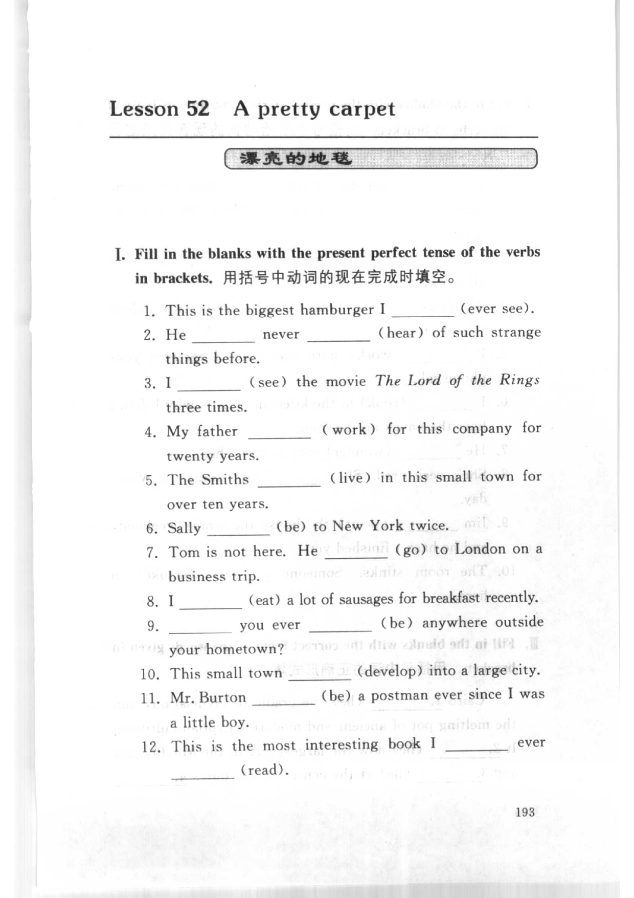
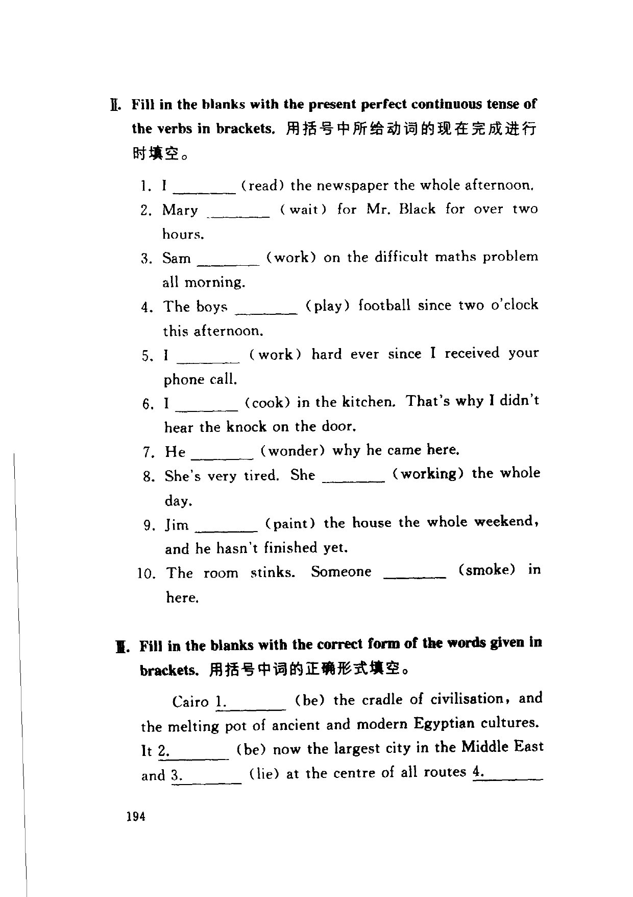
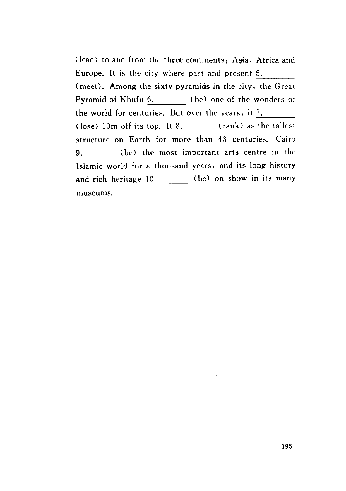

Grammar exercises · 语法练习
I. Fill in the blanks with the present perfect tense of the verbs in brackets.
用括号中动词的现在完成时填空。
-
I. Present perfect — This is the biggest hamburger I (ever see).
-
I. Present perfect — He never (hear) of such strange things before.
-
I. Present perfect — I (see) the movie The Lord of the Rings three times.
-
I. Present perfect — My father (work) for this company for twenty years.
-
I. Present perfect — The Smiths (live) in this small town for over ten years.
-
I. Present perfect — Sally (be) to New York twice.
-
I. Present perfect — Tom is not here. He (go) to London on a business trip.
-
I. Present perfect — I (eat) a lot of sausages for breakfast recently.
-
I. Present perfect — you ever (be) anywhere outside your hometown?
-
I. Present perfect — This small town (develop) into a large city.
-
I. Present perfect — Mr. Burton (be) a postman ever since I was a little boy.
-
I. Present perfect — This is the most interesting book I ever (read).
II. Fill in the blanks with the present perfect continuous tense of the verbs in brackets.
用括号中所给动词的现在完成进行时填空。
-
II. Present perfect continuous — I (read) the newspaper the whole afternoon.
-
II. Present perfect continuous — Mary (wait) for Mr. Black for over two hours.
-
II. Present perfect continuous — Sam (work) on the difficult maths problem all morning.
-
II. Present perfect continuous — The boys (play) football since two o’clock this afternoon.
-
II. Present perfect continuous — I (work) hard ever since I received your phone call.
-
II. Present perfect continuous — I (cook) in the kitchen. That’s why I didn’t hear the knock on the door.
-
II. Present perfect continuous — He (wonder) why he came here.
-
II. Present perfect continuous — She’s very tired. She (working) the whole day.
-
II. Present perfect continuous — Jim (paint) the house the whole weekend, and he hasn’t finished yet.
-
II. Present perfect continuous — The room stinks. Someone (smoke) in here.
III. Fill in the blanks with the correct form of the words given in brackets.
用括号中词的正确形式填空。
Cairo 1. (be) the cradle of civilisation, and the melting pot of ancient and modern Egyptian cultures. It 2. (be) now the largest city in the Middle East and 3. (lie) at the centre of all routes 4. (lead) to and from the three continents: Asia, Africa and Europe. It is the city where past and present 5. (meet). Among the sixty pyramids in the city, the Great Pyramid of Khufu 6. (be) one of the wonders of the world for centuries. But over the years, it 7. (lose) 10m off its top. It 8. (rank) as the tallest structure on Earth for more than 43 centuries. Cairo 9. (be) the most important arts centre in the Islamic world for a thousand years, and its long history and rich heritage 10. (be) on show in its many museums.
-
III. Correct form — Cairo
1.(be) -
III. Correct form — It
2.(be) -
III. Correct form — and
3.(lie) -
III. Correct form — all routes
4.(lead) -
III. Correct form — past and present
5.(meet) -
III. Correct form — the Great Pyramid of Khufu
6.(be) -
III. Correct form — it
7.(lose) -
III. Correct form — It
8.(rank) -
III. Correct form — Cairo
9.(be) -
III. Correct form — its long history and rich heritage
10.(be)
Original images · 原图对照
Expand a page to compare it with the transcription. Open the original in a new tab to zoom in.
展开原图核对文字，也可以在新标签页打开原图放大查看。
Book page 193 · Exercise I (present perfect, items 1–12)
Open original · 打开原图 ↗ Download original · 下载原图


Book page 194 · Exercise II (present perfect continuous, items 1–10) and Exercise III (correct form, passage items 1–4)
Open original · 打开原图 ↗ Download original · 下载原图


Book page 195 · Exercise III (correct form, passage items 5–10)
Open original · 打开原图 ↗ Download original · 下载原图


Your notes and answers
Use this space for longer responses or exercises that do not have an individual answer box.